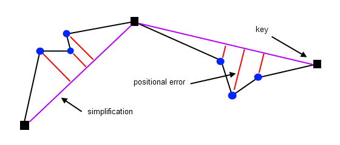

Positional Errors
Simplifying a polyline introduces shape distortion. The higher the degree of simplification the higher the amount of distortion. One way of measuring this error induced by simplification, is by looking at the location difference between the original and the simplified line.

For each original point the positional error is calculated as the perpendiculer difference between that point and the corresponding line segment of the simplification. Better performing simplification algorithms consistently produce lower positional errors.
Interface
template <unsigned DIM, class InputIterator, class OutputIterator>
OutputIterator compute_positional_errors2 (
InputIterator original_first,
InputIterator original_last,
InputIterator simplified_first,
InputIterator simplified_last,
OutputIterator result,
bool* valid)
For each point in the range [original_first, original_last) the
squared distance to the simplification [simplified_first, simplified_last)
is calculated. Each positional error is copied to the output range
[result, result + (original_last - original_first)). Note that both
the original and simplified polyline must be defined using the same value_type.
template <unsigned DIM, class InputIterator>
math::Statistics compute_positional_error_statistics (
InputIterator original_first,
InputIterator original_last,
InputIterator simplified_first,
InputIterator simplified_last,
bool* valid)
Computes statistics (mean, max, sum, std) for the positional errors between the
range [original_first, original_last) and its simplification the range
[simplified_first, simplified_last). All statistics are stored as
doubles.
Input (Type) Requirements
DIMis not zero, whereDIMrepresents the dimension of the polyline- The
InputIteratorvalue type is convertible to the value type of theOutputIterator(only forcompute_positional_errors2) - The
InputIteratorvalue type is convertible todouble(only forcompute_positional_error_statistics) - The ranges
[original_first, original_last)and[simplified_first, simplified_last)contain vertex coordinates in multiples ofDIM, f.e.: x, y, z, x, y, z, x, y, z whenDIM= 3 - The ranges
[original_first, original_last)and[simplified_first, simplified_last)contain a minimum of 2 vertices - The range
[simplified_first, simplified_last)represents a simplification of the range[original_first, original_last), meaning each point in the simplification has the exact same coordinates as some point from the original polyline.
Implementation Details
The algorithm is implemented using two nested loops. The outer loop processes each line segment from the simplification. The inner loop processes each point of the original polyline, computing the perpendicular distance to the current line segment. The inner loop ends when a point exactly matches the coordinates of the end point from the line segment.
When the outer loop has finished processing all line segments from the
simplification, the last point from that simplified polyline should exactly match
the last processed point from the original polyline. Only if this condition holds
are the calculated positional errors considered valid. This means I can only say
if the results are valid after I am done computing and copying errors to the
output range. So I needed some way of letting the caller know this. One option
would be to throw an exception. However, I designed psimpl
to not itself throw any exceptions (see section boolean
valid.
Usage
std::vector <double> original; // original polyline, assume not empty
std::vector <double> simplified; // simplified polyline, assume not empty
std::vector <double> errors; // calculated errors
bool valid = false; // indicates if the calculated errors are valid
// compute the squared positional error for
// each point of the original 2d polyline
psimpl::compute_positional_errors2 <2> (
original.begin (), original.end (),
simplified.begin (), simplified.end (),
std::back_inserter (errors), &valid);
// compute positional error statistics for
// all points of the original 2d polyline
psimpl::math::Statistics stats =
psimpl::compute_positional_error_statistics <2> (
original.begin (), original.end (),
simplified.begin (), simplified.end (),
&valid);